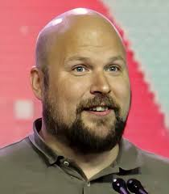
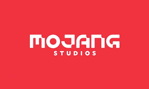

This page will tell you what Minecraft is, when it was made and who made it.
Minecraft is a video game created in 2009, but was offically released in 2011.

It was made by a man named Markus Persson, also known as Notch. He created "Mojang Studios" who owned
Minecraft untill 2014, when "Microsoft" bought "Mojang" for $2.5 billion.
 
Fun Fact: When Minecraft was first created, it was called cave game. But this was later changed. And there is also a Minecraft moive coming out!

Home page